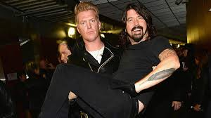

After the fourth album made with the Foo Fighters, Dave needed to blow off some steam. He then went on to play drums for the band Queens Of The Stone Age after the departure of their drummer.
With them he recorded the album Songs For The Deaf. This produced one of their most popular songs in No One Knows as well as Go With The Flow. Grohl in this band proved to be an unstoppable force in the Rock music scene.
Grohl then went back to help record a few songs on the album ...Like Clockwork. Among the songs he helped record, the song My God Is The Sun was nominated for a Grammy for best Rock Preformance.